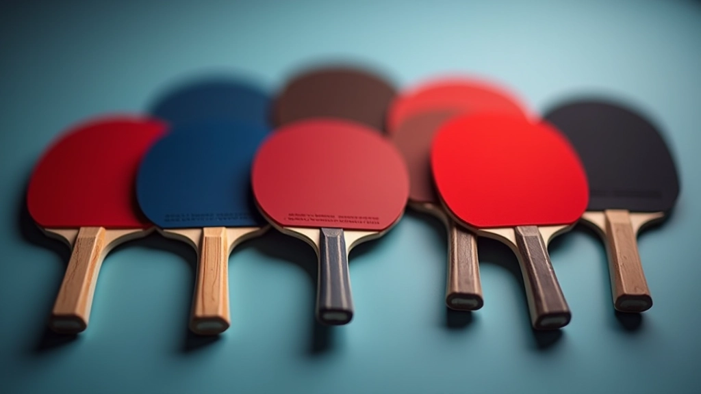

دليل المبتدئين لاختيار أول مضرب
نصائح عملية لاختيار مضرب جيد للبدء دون إنفاق الكثير من المال

لماذا اختيار المضرب الصحيح مهم جداً
اختيار أول مضرب تنس طاولة قرار مهم أكثر مما قد تعتقد. الكثير من المبتدئين يظنون أن جميع المضارب متشابهة، لكن هذا ليس صحيحاً على الإطلاق. المضرب المناسب يُحسّن من تحكمك بالكرة ويساعدك على تعلم التقنيات الصحيحة منذ البداية.
لا تقلق، لا تحتاج لإنفاق مبالغ كبيرة. هناك خيارات جيدة وموثوقة بأسعار معقولة تماماً. ما تحتاجه هو فهم ما تبحث عنه بالضبط.
اختيار صحيح = تقدم أسرع
مضرب مناسب يجعلك تركز على التقنية بدلاً من محاربة المعدات
لا تحتاج لإنفاق الكثير
أفضل المضارب للمبتدئين موجودة بأسعار معقولة جداً
اختيار واثق
معرفة المواصفات الصحيحة تجعلك تختار بثقة
أجزاء المضرب وأهميتها
كل مضرب تنس طاولة يتكون من ثلاثة أجزاء رئيسية. فهم هذه الأجزاء هو أساس اختيارك الذكي. لا تقلق، ليس معقداً كما قد يبدو.
الخشب (العصا)
هو جسم المضرب الأساسي. الخشب الجيد يعطيك تحكماً أفضل وثباتاً. للمبتدئين، ابحث عن خشب متوازن بين الثقل والخفة — حوالي 80-90 غرام هو مثالي.
السطح (الكاوتش)
الطبقة الحمراء أو السوداء على وجهي المضرب. السطح يؤثر على كيفية التقاط الكرة والتحكم بها. للمبتدئين، اختر سطح متوسط السرعة — ليس سريع جداً وليس بطيء جداً.
المقبض
هو الجزء الذي تمسك به. يجب أن يكون مريحاً وليس سميكاً جداً. قياس المقبض يختلف من شخص لآخر حسب حجم اليد.
الميزانية والخيارات المتاحة
لا تحتاج لإنفاق أموال كثيرة لتحصل على مضرب جيد. هناك ثلاث فئات سعرية واضحة للمبتدئين:
الفئة الاقتصادية
مضارب موثوقة وسهلة الاستخدام
هذه المضارب مناسبة جداً للمبتدئين. تعطيك أداة كاملة وموثوقة للتدريب. الجودة كافية لتعلم التقنيات الأساسية بسهولة. كثير من اللاعبين ما زالوا يستخدمونها حتى بعد سنوات من اللعب.
الفئة المتوسطة
أداء أفضل وتنوع أكثر
إذا كنت مستعداً لإنفاق قليل أكثر، هذه الفئة تعطيك خيارات أكثر تنوعاً. تشعر الفرق في التحكم والاستجابة. مناسبة للمبتدئين الذين يأخذون اللعبة بجدية أكثر.
تجنب الفئة المتقدمة
ليست ضرورية في البداية
المضارب المتقدمة جداً غير ضرورية للمبتدئين. الفارق سيكون ضياع للمال. انتظر حتى تتطور مهاراتك وتعرف بالضبط ماذا تريد.
نصائح عملية للاختيار
قبل شراء مضرب، تذكر هذه النقاط المهمة:
جرب المضرب قبل الشراء إن أمكن
إذا كان لديك صديق أو معلم يملك مضارب مختلفة، اطلب جرب بعضها. ستفهم الفرق بسهولة. الإحساس مهم جداً عند اختيار المضرب.
اسأل معلمك أو لاعبين متقدمين
إذا كنت تتدرب في ناد أو صالة، اطلب نصائح من المعلمين أو اللاعبين الأكثر خبرة. هم يعرفون الماركات الموثوقة والخيارات الجيدة للمبتدئين.
لا تركض وراء الأسعار المرتفعة
المضرب الغالي ليس بالضرورة الأفضل للمبتدئين. في الواقع، مضارب معتدلة السعر كثير منها أفضل من المضارب المتقدمة جداً. الأداء يأتي من الممارسة والتدريب، ليس من سعر المضرب.
افحص جودة المقبض
تأكد أن المقبض مريح وليس منزلق. مقبض سيء يؤثر على أدائك بشكل كبير. يجب أن تشعر براحة عند الإمساك به لفترة طويلة.

معايير التقييم السريعة
عندما تنظر لمضرب، ركز على هذه النقاط:
- الوزن: للمبتدئين، ابحث عن مضرب بين 75-90 غرام. وزن معتدل يساعدك على التحكم بسهولة
- السماكة: سماكة الخشب حوالي 5-6 ملم مناسبة للمبتدئين. توازن جيد بين الثبات والمرونة
- السطح: سطح متوسط السماكة حوالي 1.5-2 ملم. ليس رقيق جداً وليس سميك جداً
- المقبض: قطر المقبض حوالي 25-28 ملم. يجب أن تستطيع الإمساك به براحة دون توتر
الخلاصة: ابدأ بذكاء
اختيار أول مضرب تنس طاولة لا يجب أن يكون معقداً أو مرهقاً. تذكر أن الأساسيات هي الأهم: مضرب متوازن، وزن معتدل، وسطح جيد، ومقبض مريح. لا تنفق أموالاً كثيرة في البداية. ركز على التدريب والممارسة، والمضرب الاقتصادي الجيد سيكفيك تماماً.
الشيء الأهم هو البدء. لا تدع الاختيار المثالي يوقفك عن اللعب. اختر مضرب معقول، وابدأ التدريب، ومع الوقت ستطور ذوقك وستعرف بالضبط ما تريد في المضرب.
ملاحظة مهمة
هذا الدليل مقدم لأغراض تعليمية وإعلامية فقط. الآراء والنصائح المذكورة هنا بناءً على خبرة عملية عامة في رياضة تنس الطاولة. قد تختلف الاحتياجات من شخص لآخر حسب العمر والطول والقدرات البدنية. ننصحك باستشارة معلم متخصص أو لاعب ذو خبرة قبل اتخاذ قرار شراء نهائي. الأسعار والماركات المتاحة تختلف حسب السوق والموقع الجغرافي.